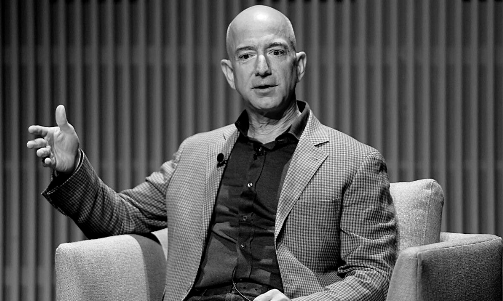

Jeff Bezos after announcing a $200 million award to him for charities of their choice.
Jeff Bezos short timeline: From niche bookseller to online shopping magnate to world’s richest man
1964 – 1982: A born entrepreneur
Born in Albuquerque, New Mexico, on Jan. 12, 1964, Bezos grew up as a tinkerer and an entrepreneur.
He turned his parent’s garage into an engineering workshop, experimenting with electrical components.
1982 – 1994: Honing his skills
Following his passion for computers, Bezos studied electrical engineering and computer science at Princeton University.
1994 – 2001: Betting on the internet
In 1994, Bezos quit D.E. Shaw to start the online bookstore that we all know today as Amazon.
1997: Joining the millionaires club
Bezos became a millionaire in 1997, just three years after starting Amazon. When Amazon went public, he raised $54 million.
2000: Space race
Indulging his interest in space exploration, Bezos founded Blue Origin, an aerospace company dedicated to finding a reliable and affordable way for people to travel to space.
2001: Vision fulfilled
Amazon finally turned a profit in 2001, demonstrating that Bezos had understood the potential for massive growth when he bet on online business.
2005: Amazon Prime makes its first appearance
Amazon Prime started off as an annual membership to reduce shipping costs for those who ordered frequently.
2006: Doubling down on the internet
Amazon began its foray into cloud computing in 2006, going up against giants like Microsoft, Alibaba, Google, and IBM.
2006: Amazon launches its Web Services
Amazon began its foray into cloud computing in 2006 and went up against some formidable giants.
2007: Amazon Kindle is invented and sells out
Bezos also made a killing with Amazon’s e-reader.
2014: Amazon Alexa becomes a household staple
Voice assistants are nothing new these days, but back in 2014,
Amazon’s release of Alexa along with its Echo smart speaker, was a giant leap forward.
2017: Amazon acquires Whole Foods
In 2017, Amazon bought Whole Foods for $13.7 billion USD. At the time, this was the largest acquisition yet for Amazon.
2019 – 2020: Under fire
For many years, Amazon has been publicly called out for its working conditions and poor company culture.
2021: Tax scrutiny
In 2021, the tax practice of the likes of Elon Musk and Warren Buffet became public knowledge, and Bezos was no exception.
2018 – 2021: Bezos memes everywhere
Like any person who has reached magnate status, Bezos has been the butt of many a joke.
Obscene wealth is unrelatable to many and the general public questions his every move (and purchase.)
July 5, 2021: End of an era
July 5 is the day Bezos will step down as the CEO of Amazon to let his colleague and confidant Andy Jassy take the helm.
July 2021 and beyond: The sky is (not) the limit
After Amazon, Bezos is expected to focus much of his energy on space exploration.
Blue Origin is working on taking non-astronauts on rides to the edge of the atmosphere,
where they can experience zero gravity and see the Earth from 340,000 feet up.
The thing that motivates me is a very common form of motivation.
And that is, with other folks counting on me, it's so easy to be motivated.
if you have time you should read more about this incredible human being on this
Wikipedia entry